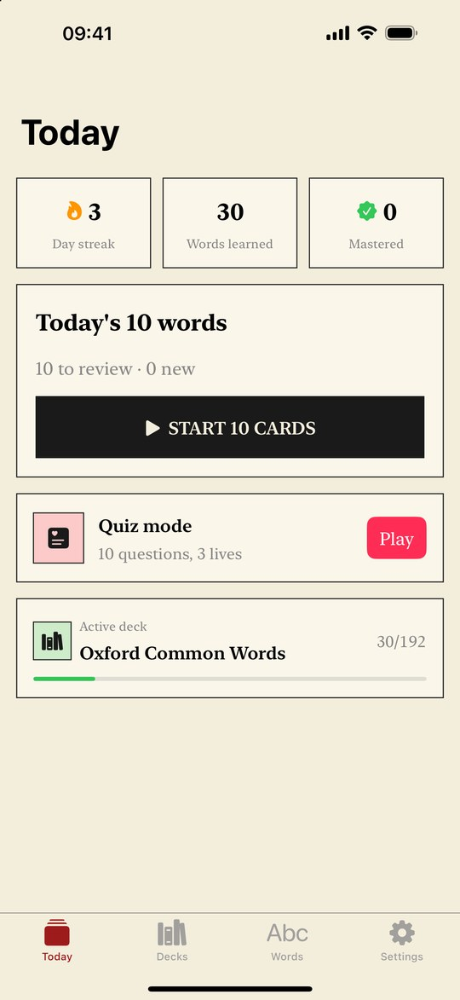
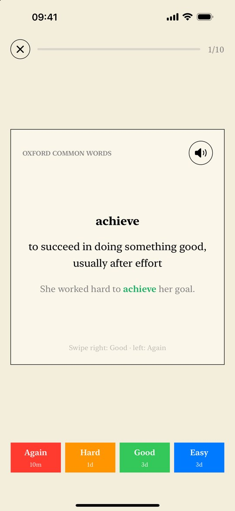
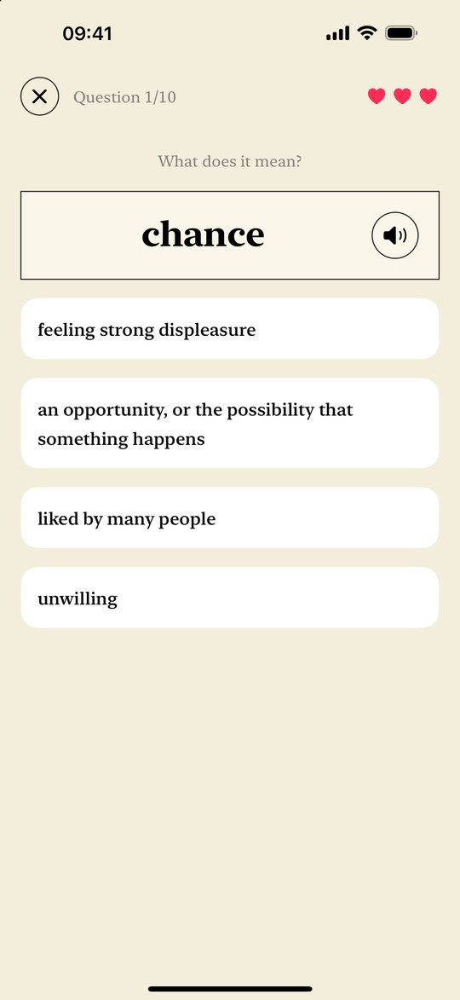
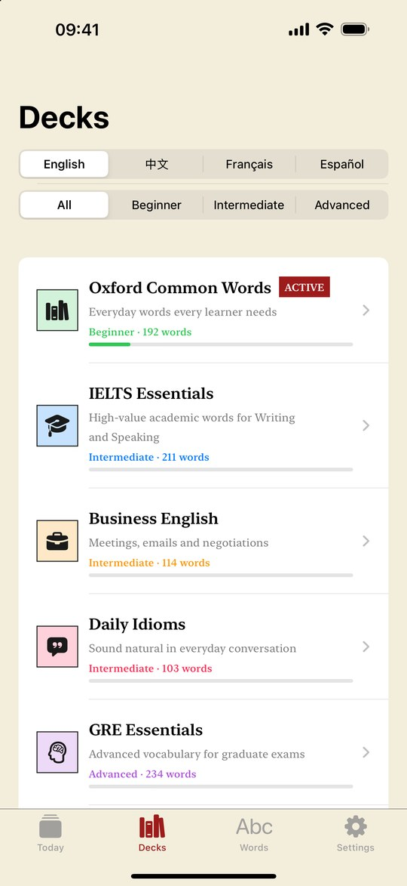

Lexi
A calm, newspaper-style vocabulary builder. Lexi brings every word back right before you would forget it.
Get supportHow it works

Ten cards a day: words due for review first, then fresh ones. Finish in a few minutes and keep your streak alive.
Spaced repetition schedules every word. Tap to flip, rate it Again, Hard, Good or Easy, or swipe. Hear each word read aloud.
Ten multiple-choice questions from the words you have learned. Three lives. Beat your own score.
Pick a deck, filter by level from Beginner to Advanced, and add your own words as you meet them.


Each day Lexi gives you up to 10 cards: words due for review first, then new ones. Tap a card to flip it, then rate it Again, Hard, Good or Easy (or swipe right for Good, left for Again). Lexi schedules the next review for you.
Watch a short optional ad to unlock 10 more words. Ads are never required for your daily deck.
Quiz mode asks 10 multiple-choice questions from words you have already learned. You have 3 lives, and it unlocks after you learn 4 words.
Yes. Open Words and tap +. Your words join the daily review before the active deck's new words.
Turn on the daily reminder in Lexi Settings, and check iOS Settings → Notifications → Lexi.
Yes. Open Decks and pick a language. Meanings are shown in English.
Open data sources, credited in Settings → Content & licences.
On your device only. See the Privacy Policy.